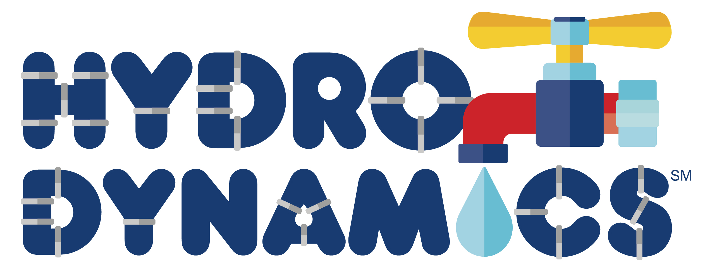

<div id="firstLegosPage">
  <div class="fllSeasonPage">
    <h2>2017 Season</h2>
    <hr>
    <div class="fllSeason">
      <div class="fllChallengeLogo">
        
      </div>
      <div class="fllRecap">
        <p>This season two teams were formed, Hill-Murray Black and Hill-Murray Green. Both groups worked to build and program a robot and worked on a research project that focused on this years theme of improving the ways in which humans interact with water.
           Both teams competed in the Eagan regional tournament.</p>
        <p>Hill-Murray Black, was made up entirely of a fantastic group of six 8th graders. Hill-Murray Black certainly did what they do best and that was embody the fun and exciting spirit that FIRST Robotics is intended to bring out in a robotics realm.  
           Not only that but they also built a great robot that steadily improved over the course of the day, scoring it's best round in the head-to-head tournament at the end of the event.  
           Their research project was well received by the judges as being a creative solution to the lack of water in the desert regions of Afghanistan.  At the awards ceremony, Hill-Murray Black received the Core Values Award which recognizes the team that best embodies the Core Values defined by FIRST.</p>
        <p>Hill-Murray Green, consisted of 6th and 7th graders. Hill-Murray Green also had an incredibly successful day.  In the robot competition they scored the second highest score of any team at the competition.  
          In the head to head competition they were narrowly defeated in the semifinals by a score of 80-85.  
          Their research project was developing an app that can control the length of showers via a timer device in the shower. It also included a rewards system to incentivize shorter showers.  The project judges encouraged the students to continue to develop this idea because of it's strong potential.  In the robot design and programming presentation the judges commented on the effective use of sensors and the modularity of their attachments as well as their efficient programming.  Due to their robotic success and their quality judging sessions, Hill-Murray Green was honored with the Judges Award at the end of the competition.  They were also chosen to advance to the Minnesota State Sectional Tournament In early January.  
          This the first time a Hill-Murray team has advanced out of their regional event.</p>
      </div>
    </div>
</div>